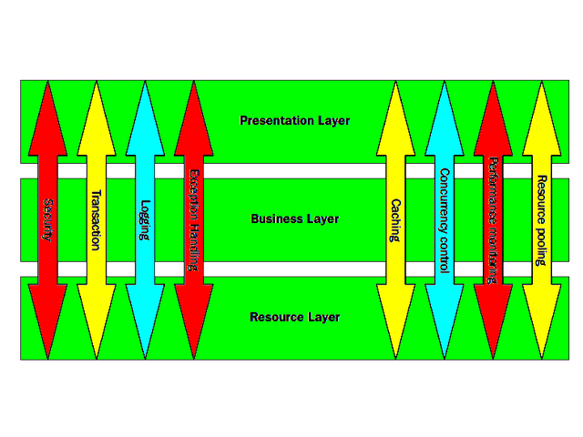
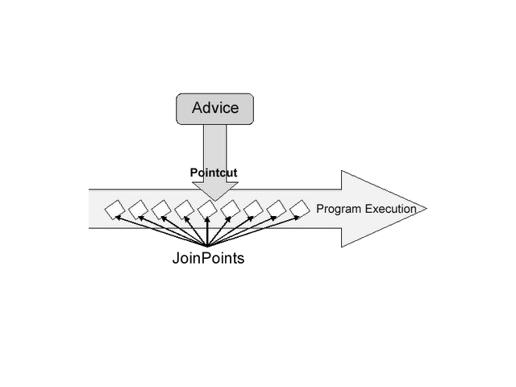
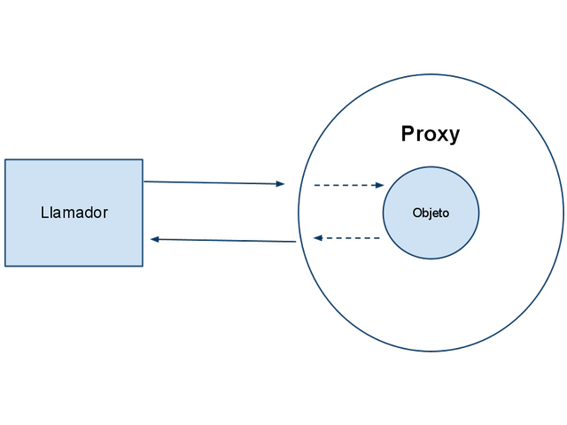
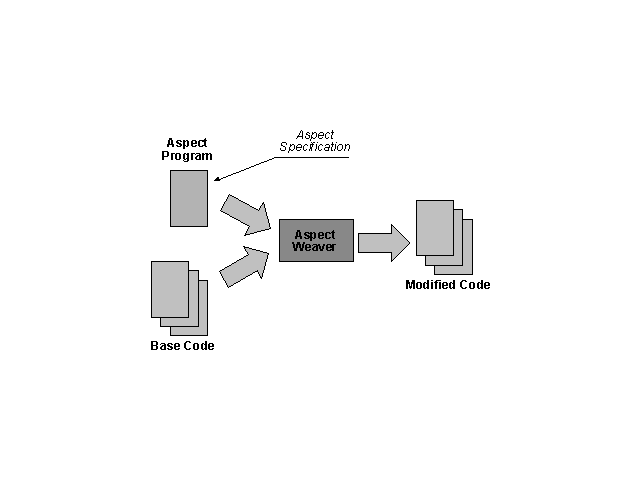

Pronoide consolida sus servicios de formación superando las 22.000 horas impartidas en más de 500 cursos (Diciembre 2011)
En la vorágine de tecnologías y marcos de trabajo existentes, una empresa dedica demasiado esfuerzo en analizar, comparar y finalmente decidir cuáles son los pilares sobre los que construir sus proyectos.
Nuestros Servicios de Formación permiten ayudarle en esta tarea, transfiriéndoles nuestra experiencia real de más de 10 años.
Al igual que existe una programación orientada a objetos, cuya pieza más significativa son las clases, se ha extendido el concepto de programación orientada a aspectos, considerando un aspecto una funcionalidad o tarea genérica que puede afectar a muchas clases.
AOP Overview
2.2 Cross-cutting concern
Los cross-cutting concern, o servicios horizontales, son funcionalidades que afectan a todas las clases de la aplicación, como el logging, la transaccionalidad o la seguridad.
AOP Cross-cutting Concern
3 Conceptos Generales
3.1 Aspect, Join Point, Advice y Pointcut
Aspect:
Es la funcionalidad del servicio horizontal que se quiere implementar.
Join Point:
Es el punto de anclaje en donde, en tiempo de ejecución, se aplica el aspecto.
Advice:
Es la acción ejecutada por un aspecto en un determinado Join Point.
Pointcut:
Es una expresión que selecciona Join Points.
AOP Join Points
3.2 Introduction, Target Object, Proxy
Introduction:
Permite declarar métodos o campos nuevos en un tipo.
Target Object:
Objeto observado por uno o más aspectos.
Proxy:
Objeto que encapsula internamente un target object.
AOP Proxy
3.3 Weaving
Weaving:
Es la acción de enlazar los aspectos, que puede hacerse en tiempo de compilación, de carga, o de ejecución.
AOP Weaver
3.4 Spring AOP
En Spring AOP sólo se permiten join points de ejecución de métodos públicos, para interceptar métodos protegidos o privados utilizar AspectJ.
En Spring AOP no se pueden interceptar la lectura y/o la actualización de atributos, para ello utilizar AspectJ.
Spring AOP es menos potente que AspectJ, pues está enfocado en resolver los problemas más habituales de una forma integrada con el contenedor de IoC.
Se pueden definir aspectos con la anotación @AspectJ que necesita Java 5, o puede usarse el fichero de configuración.
@Aspectpublicclass Espectador {
publicEspectador(){}
//Nuevo método para definir el pointcut@Pointcut("execution(* *.interpretar(..))")
publicvoidrealizar(){}
//La anotación se apoya en un método creado donde se encuentra el pointcut@Around("realizar()")
public Object miAdviceAspectJ(ProceedingJoinPoint joinpoint) throws Throwable{
Object retVal = null;
try {
retVal= joinpoint.proceed();
this.aplaudir();
} catch (Throwable e) {
this.solicitarDevolucion();
throw e;
}
return retVal;
}
}
4 Pointcuts
4.1 Definición
Un Pointcut puede definirse dentro de un aspecto, sólo visible para él, o puede definirse directamente bajo <aop:config> para estar disponible de forma global.
Ejemplo: llamadas de todos los métodos públicos de las clases del paquete com.ats.test.